AI-DLC가 묻는 질문과 승인 창의 검토 지적을 검토 보드에서 역할별로 나눠 팀원이 동시에 검토합니다. 누가 어느 카드를 보고 어떤 근거로 이의를 냈는지 바로 확인하고, 결정은 한 번에 묶어 세션에 넣습니다. 승인할 때는 산출물 원본 전체를 열어 검토 중인 절을 확인하고, 볼트 보드에서는 유닛을 눌러 그 유닛을 만드는 Claude Code를 바로 봅니다.
왜 필요한가#
30장에서는 AI-DLC가 사람의 응답을 기다리면 해당 단계 담당자에게 카드가 가고, 담당자는 결정 화면에서 하나씩 결정했습니다. 실제로 실행해 보니 병목은 AI가 아니라 사람의 검토였습니다. 요구사항 질문이 여덟 개면 PO 한 사람이 여덟 개를 차례로 확인하고, 그중 개발자나 운영 담당이 확인해야 할 질문도 PO를 거쳐야 했습니다. 승인 창의 검토 지적은 요약만 보여서 지적이 가리키는 문서를 찾아 열어 보는 데 시간이 들었습니다.
AI-DLC는 질문마다 어떤 역할에 묻는지([제품 관리자], [개발자] …)와 추천 답과 그 이유((권장: …))를 적고, 검토 지적에는 위치(decisions.md > ADR-003처럼)를 적습니다. 검토 보드는 이 정보를 그대로 씁니다.
| 하던 방식 | 검토 보드에서 |
|---|---|
| 단계 담당자 한 사람이 질문을 하나씩 확인 | 질문의 역할 태그에 따라 역할별 열로 나누고, 각자 자기 열을 동시에 검토 |
| 추천이 맞는지 따로 찾아봄 | 카드마다 AI-DLC 추천과 그 이유, 왜 묻는지가 보임. 맞으면 「추천대로」 한 번 |
| 이견은 회의나 메신저로 | 카드에 이의·질문과 이유, 기록에서 찾은 근거를 붙임. 다른 사람 화면에 바로 「논의 필요」 |
| 누가 무엇을 보는지 모름 | 카드와 머리줄에 지금 보는 사람 |
| 승인 창의 요약만 봄 | 지적마다 원본 보기 — 문서 전체를 열고 그 절에 띠 |
| 결정을 하나씩 입력 | 정해진 것을 한 번에 보내기: 질문 파일에 답을, 승인 창에 결정 하나를 |
함께 논의할 것이 남으면 「논의 필요」 카드만 골라 30장의 몹 회의 대화방에 올릴 수 있습니다. 혼자 빠르게 끝낼 것은 각자 처리하고, 함께 정할 것만 회의로 가져가는 방식입니다.
준비#
| 항목 | 내용 |
|---|---|
| 팀 세션 | 30장처럼 AI-DLC 저장소를 연결형 폴더로 붙이고, 역할을 정하고, 팀 세션을 띄웁니다 |
| 실습 요청 | 「팀 회의실 예약 — 회의실 목록을 보고, 시간을 잡아 예약하고, 같은 시간이 겹치면 막는다. 예약 10분 전에 알림을 보내고, 알림은 따로 도는 작업자가 보낸다. 화면은 Vue, 서버는 Node(Express)로」, /aidlc classic |
| 등장인물 | 팀 리드 한지수, PO 오세린, 아키텍트 최민준, 개발자 강다은, QA 윤서준(30장과 같음). 디자이너·운영·플랫폼 역할은 비워 둡니다. 빈 역할의 카드는 단계 결정권자에게 갑니다 |
따라 하기 1 — 폴더에 붙은 앱 세 개#
- 한지수로 로그인해 폴더에서
회의실 예약폴더를 엽니다. AI-DLC 팀 세션 띠 아래에 앱 단추 세 개가 보입니다: 산출물 보기, 볼트 보드, 검토 보드. - 세션 시작을 눌러 팀 세션을 띄우고, 쉘에
/aidlc classic "팀 회의실 예약 — …"을 입력합니다.
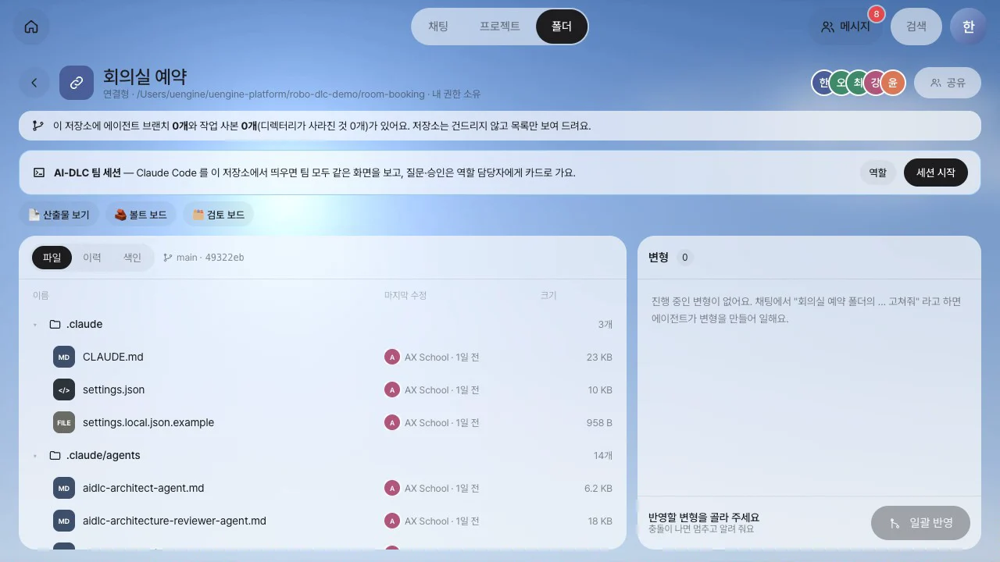
따라 하기 2 — 질문을 역할별로 나눠 동시에 검토하기#
- AI-DLC가 요구사항 질문 여덟 개를 남기면 오세린의 홈에 「요구사항 질문 8개가 답을 기다려요」 카드가 옵니다. 동시에 강다은의 홈에는 자기 몫만 적힌 「검토할 질문 1개 (개발자)」 카드가 옵니다. 어느 카드에서든 검토하기를 누르면 검토 보드가 열립니다.
- 검토 보드는 질문의 역할 태그에 따라 열을 나눕니다. 이 실행에서는 PO·기획(Q1~Q6), 개발자(Q7), 운영(Q8)입니다. 운영 역할은 비어 있으므로 결정권자인 오세린이 그 열을 맡습니다. 카드마다 AI 추천과 그 이유가 있고, 머리줄 오른쪽에 지금 함께 보는 중인 사람이 보입니다.
- 각자 자기 열의 카드를 엽니다. 서랍에는 질문과 질문한 이유, 선택지(추천에 표시), 버튼이 있습니다. 추천이 맞으면 ✓ 추천대로, 다른 선택지를 고르려면 이걸로, 선택지에 없는 답이면 이유를 적고 다른 답 (X)를 누릅니다. 오세린과 강다은은 동시에 각자 결정합니다.
- 강다은이 오세린의 Q1(누가 예약하는지 어떻게 알아볼까요?)에 이유를 적고 ✋ 이의 있어요를 누릅니다. 이의와 질문은 누구나 달 수 있지만 이유가 있어야 합니다. 카드의 답은 그 열의 담당자와 단계 결정권자만 정할 수 있습니다.
- 강다은이 🔎 근거 찾기를 누르면, 기록에 있는 산출물에서 질문의 낱말이 나오는 줄을 찾아 절 이름과 함께 보여 줍니다. 모델을 호출하지 않아 결과가 바로 나옵니다. 의견에 붙이기로 근거를 붙이고 의견을 남깁니다.
- 오세린의 화면에서 Q1이 곧바로 논의 필요로 바뀝니다. 카드를 열면 누가 어떤 이유로 이의를 냈는지, 어떤 근거를 붙였는지 보입니다.
- 근거를 누르면 산출물 보기가 옆 시트로 열립니다. 문서 전체가 보이고, 근거가 가리키는 절에 검토 중인 부분 띠가 둘러집니다. 목차에서도 그 절이 강조됩니다.
- 오세린이 강다은의 의견대로 B에서 이걸로를 눌러 답을 정합니다. 담당자가 다시 정하면 논의 필요 상태가 해제됩니다.
- 아래 막대의 답을 질문 파일에 적고 세션에 알리기를 누릅니다. 답 여덟 개가 질문 파일에 한 번에 적히고, 세션에 「답을 적었어요」가 들어갑니다. 답을 정하지 않은 카드가 남았으면 나머지는 AI 추천대로 채워 보내기로 보낼 수 있고, 논의 필요 상태의 카드가 남았으면 한 번 더 확인합니다.
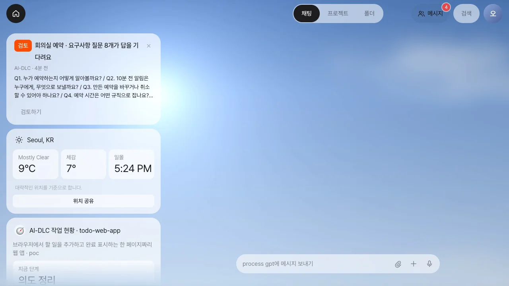
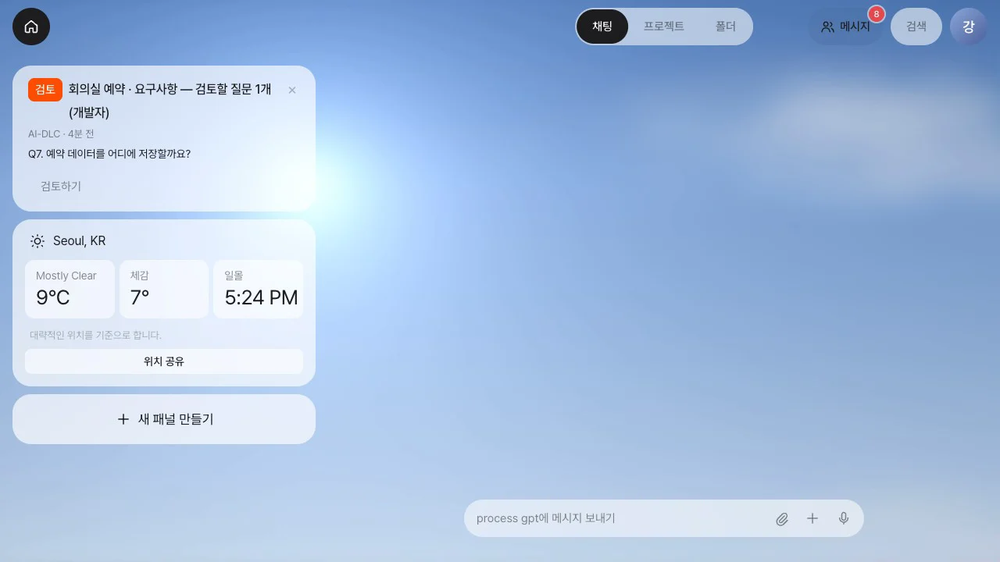
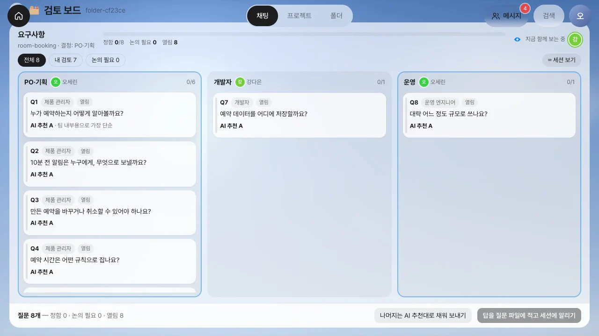
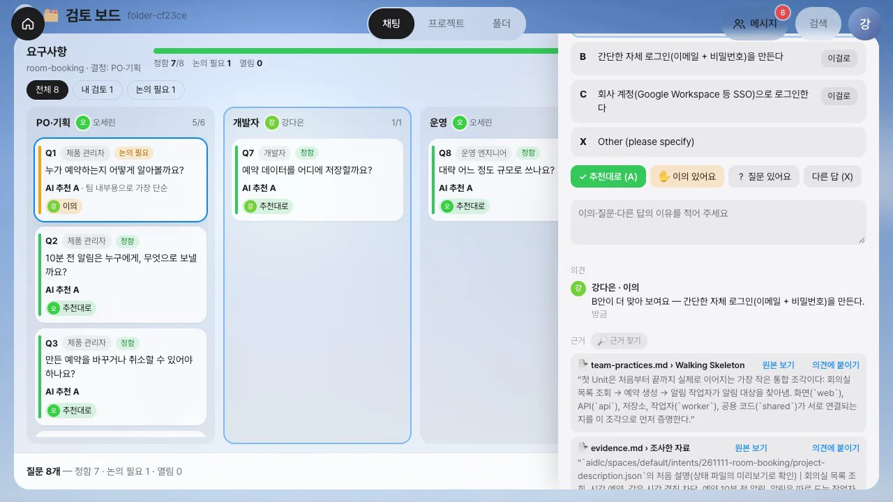
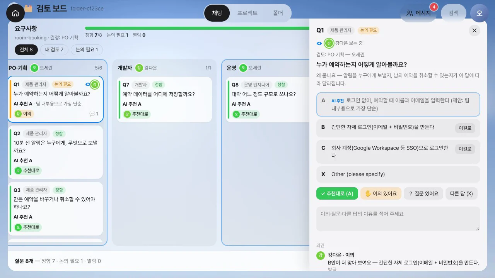
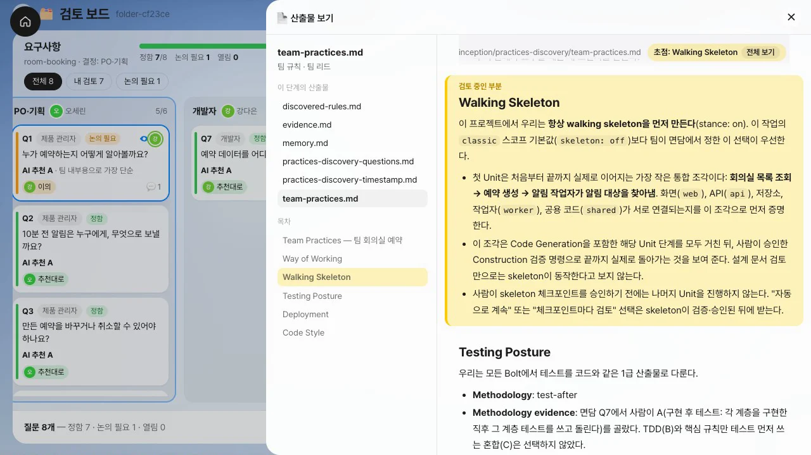
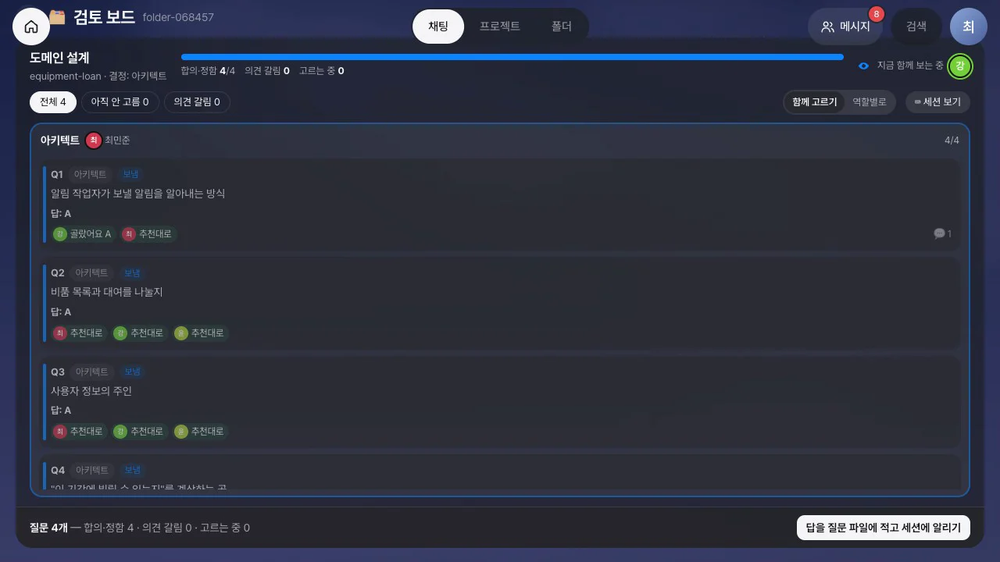
따라 하기 3 — 승인 창의 검토 지적: 원본을 보고 결정 하나로#
- AI-DLC가 유저 스토리를 작성하고 검토를 거친 뒤 승인을 기다립니다. 검토 지적이 있는 승인 카드는 결정 화면 대신 검토 보드로 열립니다. 지적이 없는 승인은 30장처럼 결정 화면에서 선택합니다.
- 지적은 위치가 가리키는 문서를 만든 단계의 역할에게 갑니다. 예를 들어 위치가
requirements.md면 PO의 열,decisions.md면 아키텍트의 열에 놓입니다. 이번 다섯 개는 모두 오세린의 몫입니다. - 지적 카드를 열면 심각도, 지적 내용, 고칠 일이 있고, 위치는 원본 보기 링크로 바뀌어 있습니다.
stories.md › US5.4를 누르면 스토리 문서 전체가 열리고 US5.4 절에 띠가 둘러집니다. - 지적마다 처리 방법을 정합니다. ✓ 위험 감수(승인)를 누르면 그대로 승인하고, ✎ 고쳐 주세요와 ⊘ 해당 없음을 선택하면 이유도 적습니다. 오세린은 R-01을 고쳐 달라고 하고 나머지 넷은 위험 감수로 정합니다.
- 아래 막대에 세션에 들어갈 결정 하나가 미리 보입니다. 고칠 것이 있으면
Request Changes: 고쳐 주세요: R-01 — …, 해당 없음만 있으면 그 이유를 적은 승인, 모두 위험 감수면Approve입니다. 결정을 묶어 세션에 넣기를 누릅니다. - 세션 보기로 공유 쉘을 열면 AI-DLC가 사람의 요청을 받아 단계를 되돌려 수정하는 모습이 보입니다. 고친 뒤 다시 승인을 묻습니다.
- 도메인 설계에서는 지적 여섯 개가 아키텍트 최민준의 열에 놓입니다. 주요 지적 R-01은 구성 요소 문서와 결정 기록(ADR) 두 곳을 가리키고, 각 문서는 원본 보기로 열립니다.
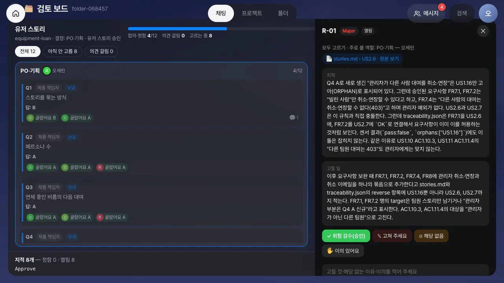


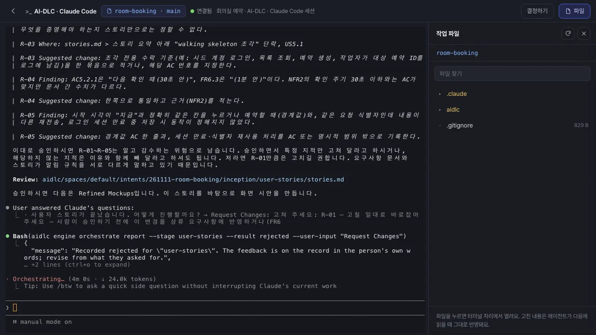
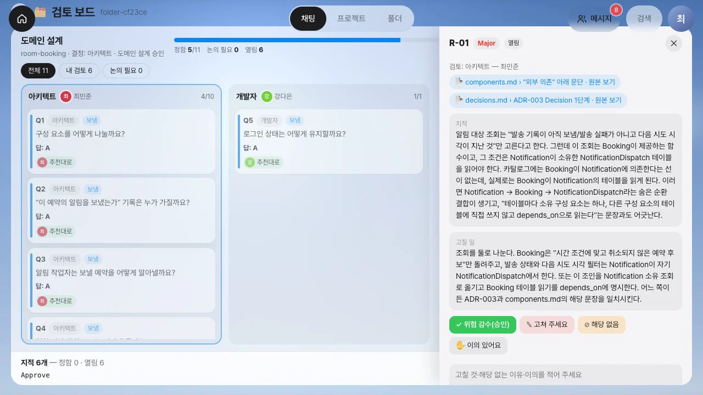
따라 하기 4 — 코드 계획은 개발자에게, 볼트 보드에서 지금 도는 유닛 보기#
- 구현은 유닛마다 기능 설계 → 품질 요구 → 품질 설계 → 인프라 설계 → 코드 생성 순서로 진행됩니다. 유닛의 코드를 작성하기 전에 AI-DLC가 코드 계획 승인을 묻습니다(「Approve the code plan for u2-booking-rules?」). 이 카드는 개발자 강다은에게 갑니다.
- 결정 화면 머리에 지금 단계 코드 생성 · 담당 역할 개발자가 보이고, 승인 창 아래에는 그 단계의 산출물을 여는 원본 보기가 있습니다.
code-generation-plan.md를 누르면 계획 문서 전체가 옆에 열립니다. 무엇을 만들고 어떤 시험을 할지 확인한 뒤 Approve Plan을 누릅니다. - 코드가 만들어지는 동안 한지수가 폴더에서 볼트 보드를 엽니다. 딜리버리 계획의 볼트 여섯 개 아래에 유닛이 있고, 유닛마다 다섯 구축 단계가 칸으로 나옵니다. 끝난 단계의 칸은 초록, 진행 중인 단계의 칸은 파랑이며, 오른쪽 위에 지금 세션이 만드는 유닛이 적혀 있습니다.
- 진행 중인 유닛(점이 깜빡임)을 누르면 오른쪽에 진척 요약(단계, AI 작업, 사람 대기, 단계별 시간, 최근 일, 이 유닛의 산출물)과 세션 화면이 나옵니다. 그 유닛을 만드는 Claude Code의 화면이 3초마다 갱신됩니다.
- 작업실에서 열기를 누르면 팀이 같이 쓰는 쉘로 바로 들어갑니다. 30장처럼 여기서 권한 창에 답하거나 바꿀 점을 적을 수 있습니다.
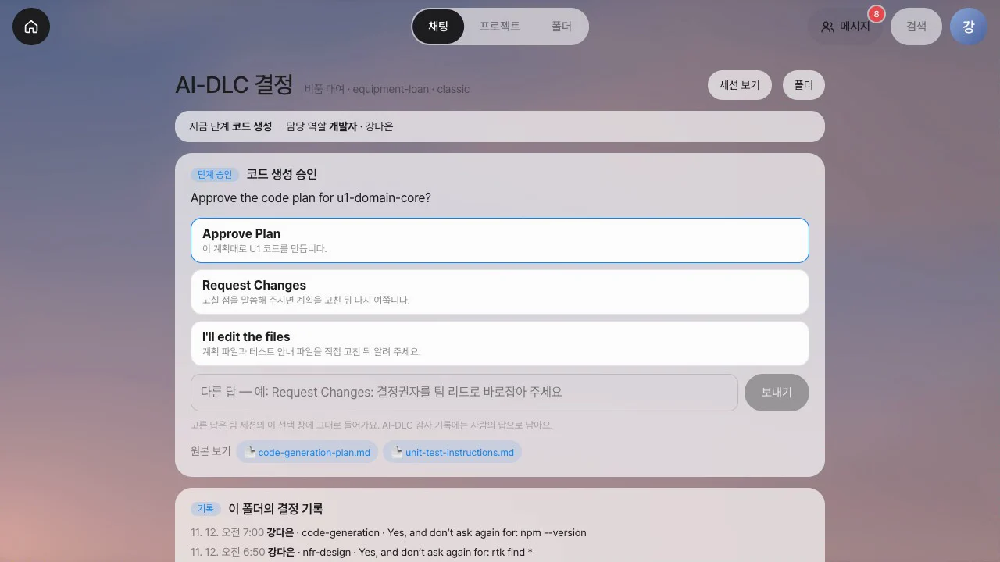
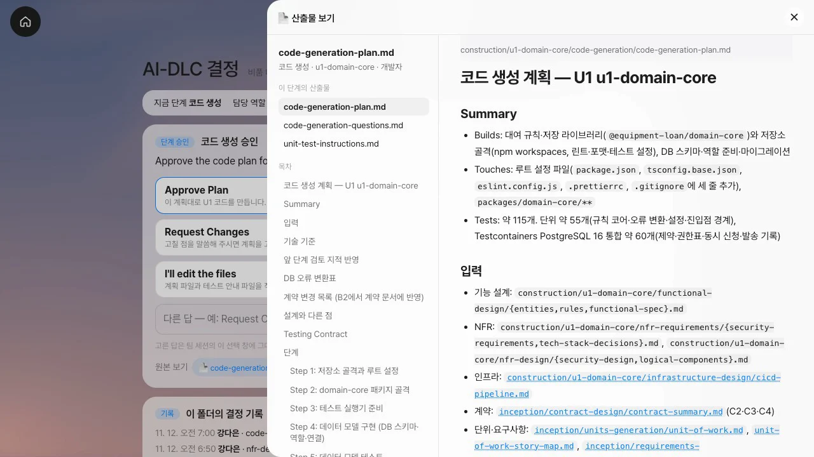
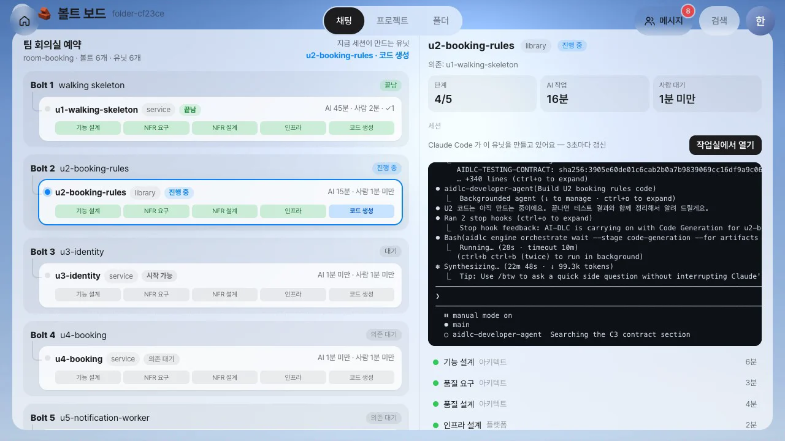
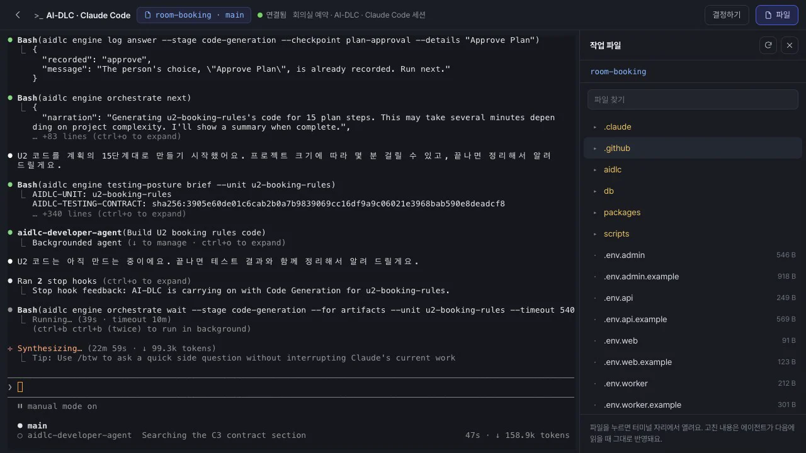
앱으로 붙이기 — MCP Apps#
검토 보드, 볼트 보드, 산출물 보기는 Lite에 내장된 화면이 아니라 앱입니다. 앱은 MCP의 공식 확장인 MCP Apps 규약을 따릅니다. 각 앱은 하나의 MCP 서버이며, 서버의 server/apps/<id>/ 폴더 하나에 담겨 있습니다. 이 폴더를 제거하면 그 앱의 도구·화면·카드만 사라지고 나머지는 그대로 동작합니다.
| 부분 | 규약 | 떼었다 붙이기 |
|---|---|---|
MCP 서버 server.js |
도구와 화면(ui://<id>/…)을 등록합니다. 진입 도구가 화면을 가리킵니다. 주소는 /api/apps/<id>/mcp이고, 로그인한 사용자의 권한으로 동작합니다 |
Lite의 기능(AI-DLC 기록·사람·세션·결정·알림)은 lite-host MCP 서버의 도구로만 사용합니다. Lite 모듈을 import하지 않습니다(테스트로 검사합니다) |
매니페스트 manifest.json |
Lite가 별도로 알아야 할 정보만 적습니다. 진입 도구, 표시할 위치(폴더 띠 단추·옆 시트·홈 패널), 처리할 대기 항목(질문·승인)이 여기에 해당합니다 | 서버가 시작될 때 검사하고, 규약에 맞지 않는 앱은 로드하지 않습니다 |
화면 ui/ |
출처가 없는 격리된 iframe에서 표준 postMessage(JSON-RPC)로만 Lite와 통신합니다. 실시간 갱신은 Lite 확장 알림으로 받습니다 | 정해진 Lite 화면과 외부 주소로만 링크를 엽니다 |
표 sql/*.sql |
서버가 처음 시작될 때 앱 전용 표(app_<id>_*)를 한 번 만듭니다 |
다른 기능의 표는 변경하지 않습니다 |
홈 패널(30장의 대시보드 6종)도 Lite에 들어 있는 패널 앱의 화면입니다. 이음오피스·ArtCraft 편집기도 같은 규약을 따르는 앱입니다. 편집기는 저장소와 글꼴이 필요하므로, 표준 샌드박스 프록시 뒤에서 자체 출처를 받아 동작합니다. 각 앱은 다른 앱의 내부 구조를 알지 못합니다. 검토 보드가 산출물 보기를 열 때도 앱 id와 인자만 전달합니다.
표준이라서
MCP Apps는 Claude·ChatGPT·VS Code 같은 호스트가 지원하는 표준입니다. Lite는 한 줄로 설치할 수 있도록 서버 프로세스 하나로 동작합니다. 앱은 Lite 기능을 lite-host 도구로만 사용하므로, 앱을 별도 서비스로 떼어 내도 같은 도구(/api/apps/_host/mcp)를 호출하면 됩니다.
알아 둘 점#
- 누가 정하나: 카드의 결정은 그 열(역할)의 담당자가 내리고, 단계 결정권자와 폴더 편집 권한자도 정할 수 있습니다. 폴더 구성원 누구나 이유를 적어 이의·질문을 남길 수 있습니다. 보내기는 단계 결정권자(또는 편집 권한자)가 합니다.
- 보는 중 표시는 몇 초마다 다시 알리고, 15초 동안 소식이 없으면 사라집니다. 서버가 다시 시작하면 잠깐 비었다가 다시 채워집니다.
- 근거 찾기는 낱말이 같은 줄을 찾습니다. 같은 뜻의 다른 말은 찾지 못하므로, 찾은 근거가 맞는지는 사람이 확인합니다.
- 산출물 보기는 기록(
aidlc/) 안의 마크다운 문서만 엽니다. 문서 속 HTML은 글자로 보이고 링크는 스스로 열리지 않습니다. 코드 파일 위치를 가리키는 지적은 원본 보기 링크 없이 위치만 보입니다. - 지금 단계: 구현은 유닛마다 진행되기 때문에 AI-DLC 상태 파일의 지금 단계가 첫 구축 단계에 머뭅니다. Lite는 감사 기록의 유닛 사건과, 그보다 먼저 쓰이는 코드 계획 파일의 위치로 현재 유닛과 단계를 파악합니다. 그래서 코드 계획 승인이 개발자에게 갑니다(30장의 알려진 한계를 고침).
확인 문제
- 요구사항 질문 여덟 개 중 Q7에
[개발자]태그가 붙어 있습니다. 강다은은 어떤 카드를 받습니까? - 오세린이 추천대로 정한 카드에 강다은이 이의를 냈습니다. 오세린의 화면에서 그 카드는 어떻게 됩니까? 이 상태에서 보내기를 누르면요?
- 승인 창의 지적 위치가
…/decisions.md > ADR-003입니다. 이 지적 카드는 누구의 열에 놓이고, 원본 보기를 누르면 무엇이 보입니까? - 지적 세 개 중 하나는 고쳐 달라, 하나는 해당 없음, 하나는 위험 감수로 정했습니다. 세션의 승인 창에는 무엇이 들어갑니까?
답
- 자기 몫만 적힌 「검토할 질문 1개 (개발자)」 카드입니다. 단계 결정권자인 PO는 「질문 8개가 답을 기다려요」 카드를 받습니다.
- 곧바로 「논의 필요」로 바뀌고, 누가 어떤 이유로 이의를 냈는지 보입니다. 보내기를 누르면 「논의가 끝나지 않은 질문이 1개 있어요」라고 한 번 더 묻습니다. 담당자가 다시 정하면 해제됩니다.
- 결정 기록 문서를 만든 도메인 설계 단계의 역할, 곧 아키텍트의 열입니다. 원본 보기를 누르면
decisions.md전체가 옆에 열리고 ADR-003 절에 띠가 둘러집니다. Request Changes: 고쳐 주세요: … 해당 없음: …한 줄이 글 선택지로 들어갑니다. 위험 감수로 정한 지적은 그대로 받아들인 것으로 처리됩니다.